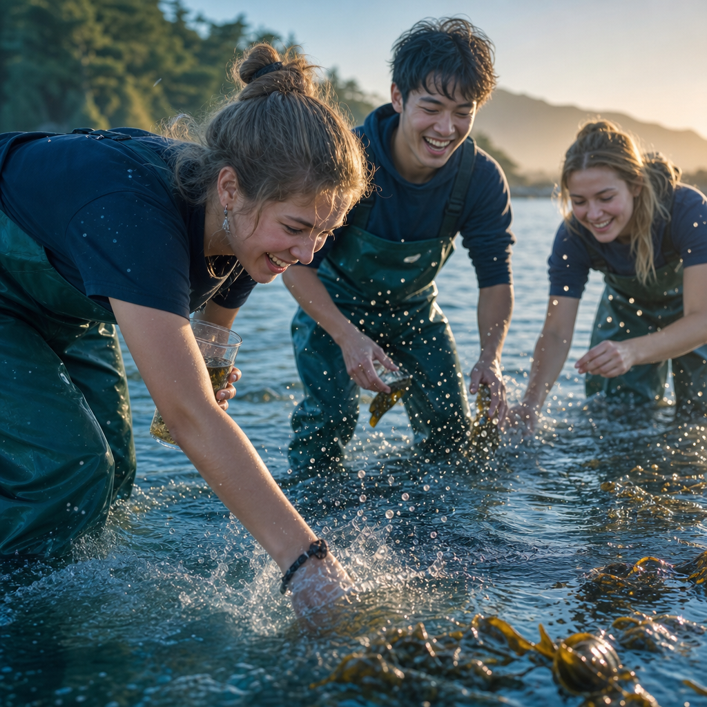
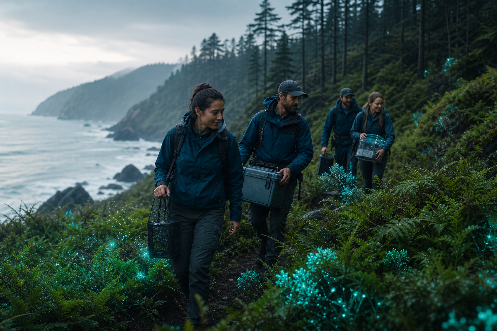
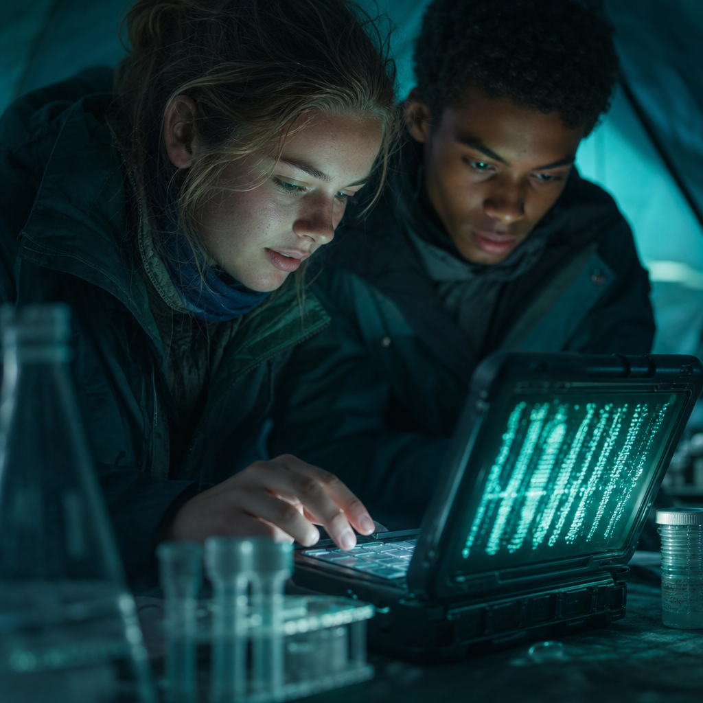
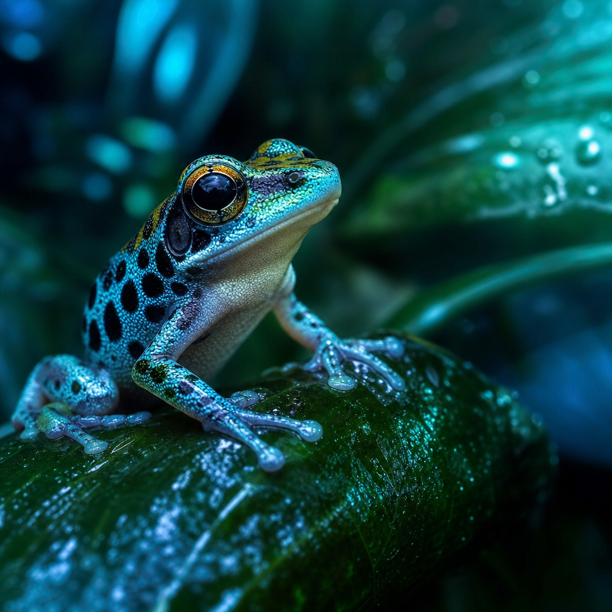
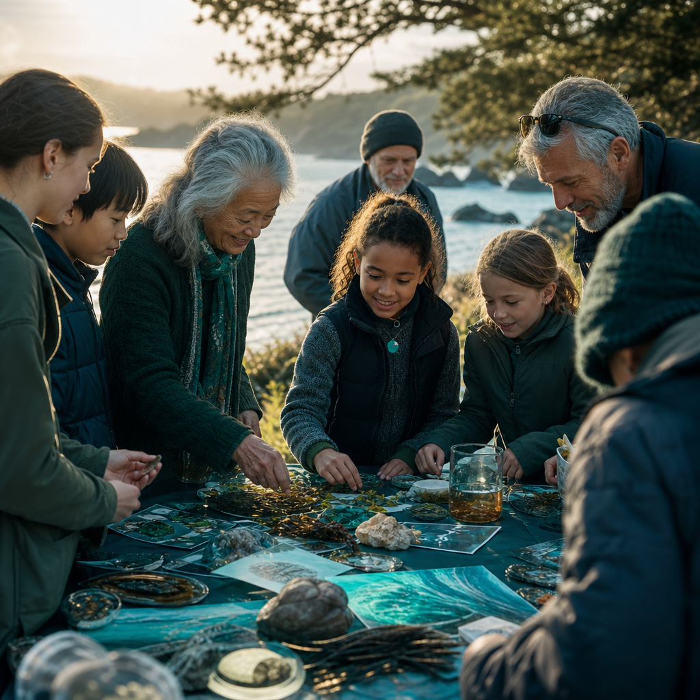

Knee-deep in the kelp survey
A coastal cohort wades into the shallows to sample where land meets sea, logging conditions before the first filter ever fills.

Stories from the field
Follow our students, educators, and partners as they read the living world one sample at a time, where science, education, and stewardship meet.

Before sunrise, a cohort of fifteen students laced their boots and followed the coastal trail down to the rocks. By the time the fog lifted, they had filtered six liters of seawater through fine membranes, each one now holding the invisible traces of life that drifted past in the dark.
Back in the field tent, a portable sequencer the size of a phone hummed to life. As the first reads scrolled across the laptop, the group fell quiet. Anchovy. Spiny lobster. A nudibranch nobody had seen on the survey lists. The water had been keeping records all along, and for the first time these students were the ones reading them.
"We didn't just collect a sample," one student wrote in her field notes that night. "We collected a moment of the ocean, and it answered back."
More from this cohortDispatches
Every story below began with a single sample and a curious question. Together they map how genomic science is reaching new hands, new rivers, and new communities.

A coastal cohort wades into the shallows to sample where land meets sea, logging conditions before the first filter ever fills.

Two students keep watch over a glowing screen as base pairs accumulate, turning a tent into a working genomics lab.

An eDNA match flagged an amphibian thought to be absent from the valley, sending the team back to verify a hidden survivor.

Families gather as students present their findings beside paintings and field notes, sharing the science back with the place that made it.
I used to think science happened somewhere far away. Now I know it happens wherever I'm willing to look closely.
Marisol, age 16 · coastal pilot cohort, Los Angeles
Keep following
New cohorts launch each season across oceans, freshwater, and forests. Follow the journey, bring the program to your classroom, or partner with us to widen the network of young stewards reading Earth's living library.